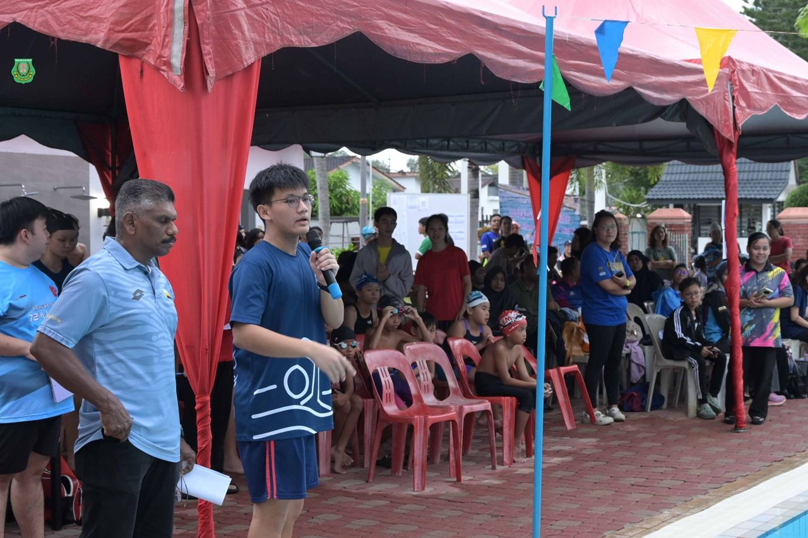
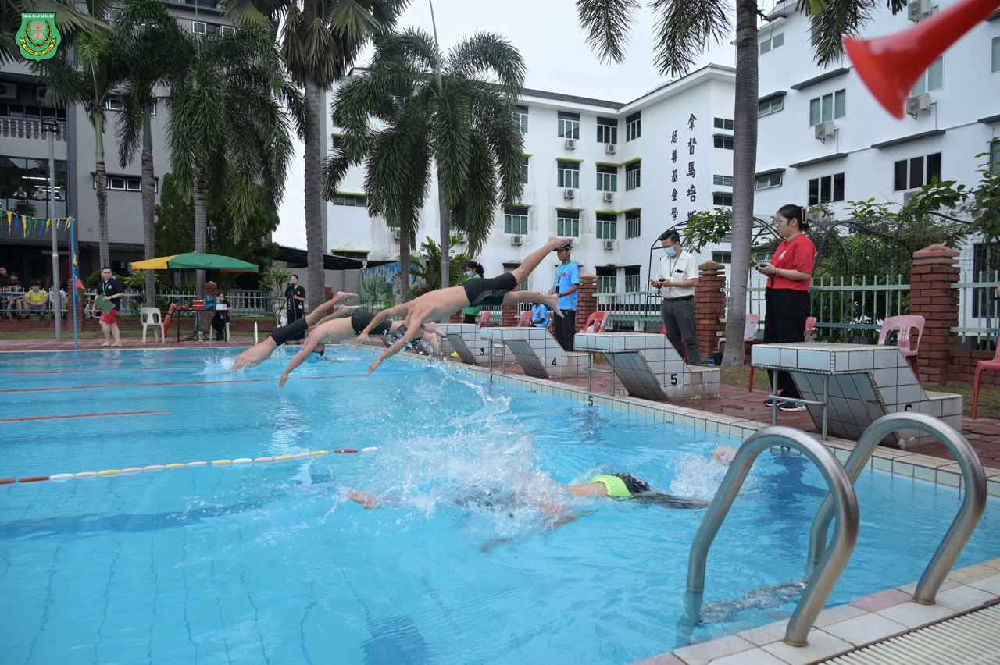
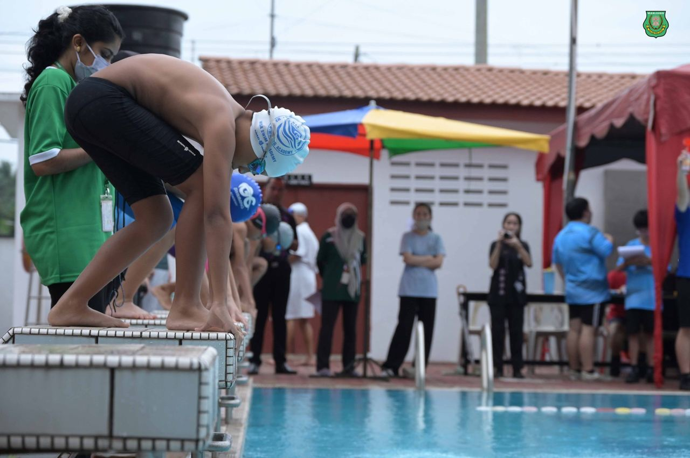
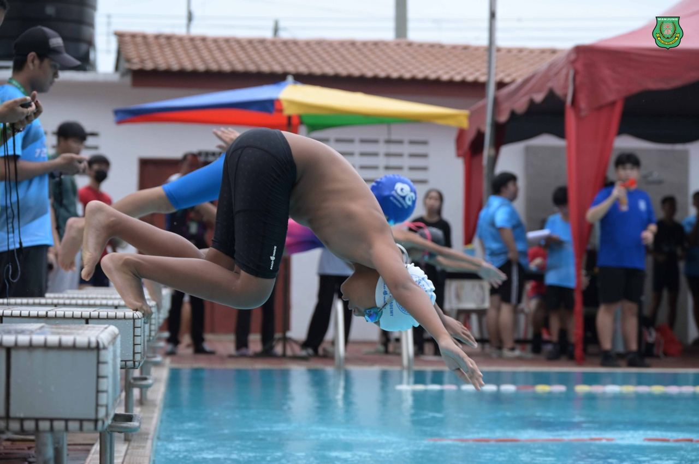
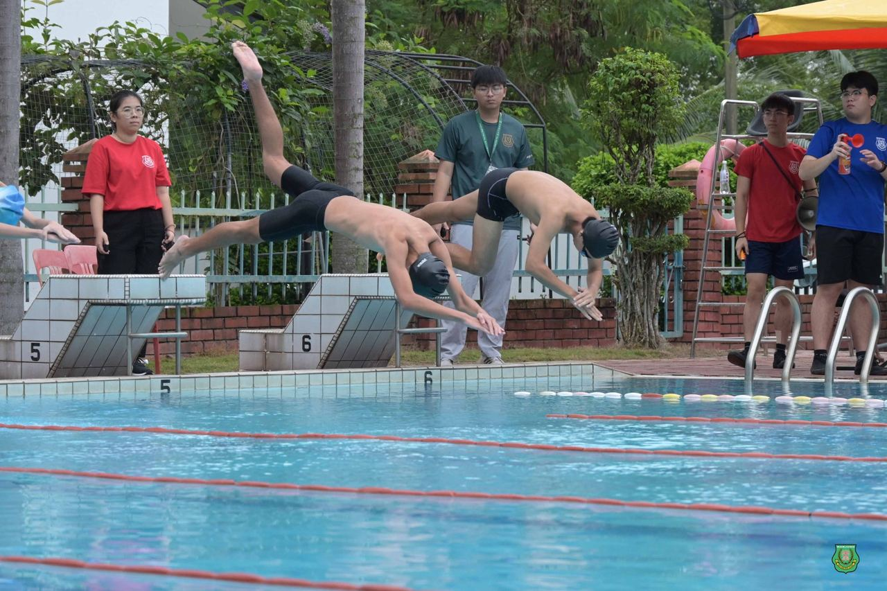
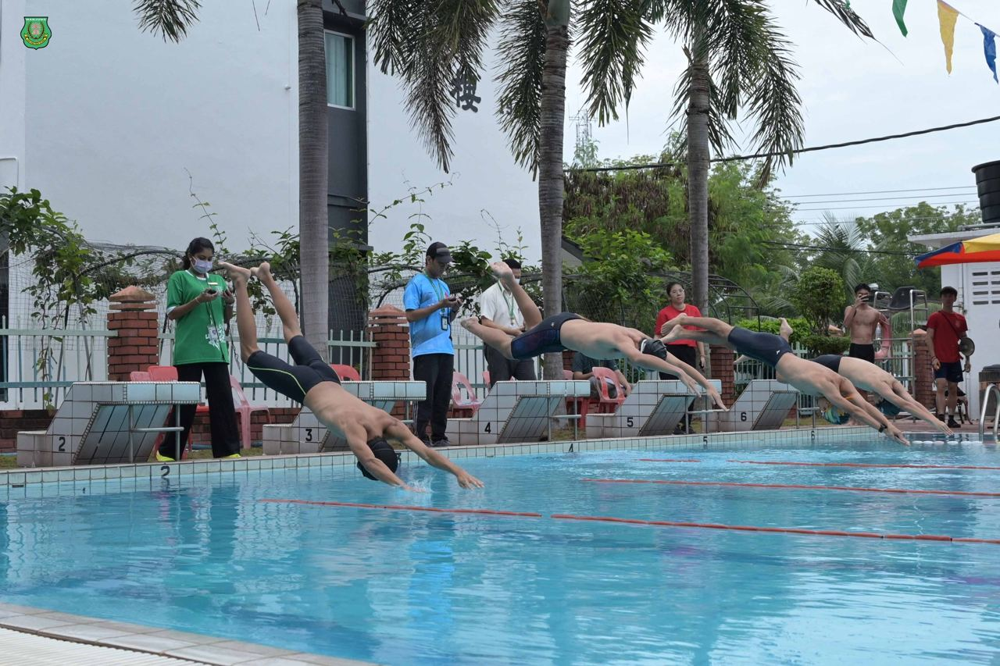
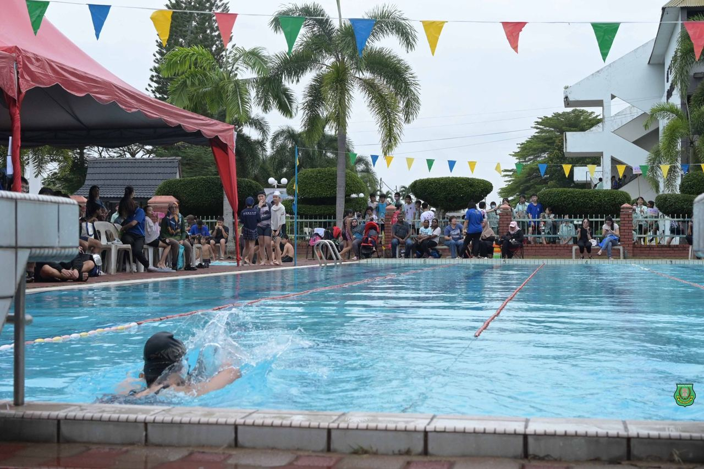
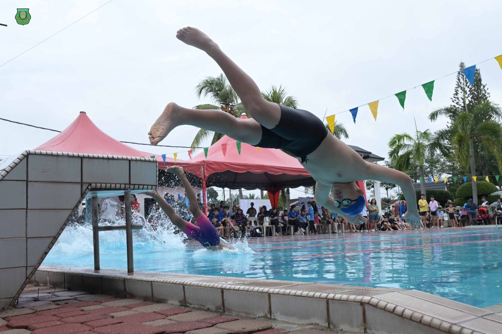

南华独中首届丹斯里颜清文杯游泳比赛
南华独中首届丹斯里颜清文杯游泳比赛
吸引十二所小学报名参加
由教育局支持主办，南华独中成功举办第五届校内班级游泳比赛暨第一届丹斯里颜清文杯游泳比赛。此比赛旨在发掘学生的运动天赋，为他们提供展示自我的平台。比赛不仅面向本校学生，更设立小学组，吸引八所华小与四所国小学生报名参加，体现了体育是超越族群与年龄的通用语言，真正做到了以体育促进和谐与包容的精神。
校长陈丽冰博士在致欢迎辞中表示，南华独中余雪梅泳池作为全国第一所拥有游泳池的独中，向来致力于发展游泳体育项目。此外，陈校长更是强调本校董事长颜登逸先生所提出的教育愿景“美美与共，天下大同”此理念不仅体现在对华裔孩子，更开放给友族孩子的培养以及鼓励融入社区合作中，通过开放学校的现代化设施，本校希望构建一个资源共享、彼此支持的环境，让每一个孩子、每一位社区成员都能在这里找到成长和发展的动力。另外，为了鼓励校外人士甚至将游泳运动拓展至各年龄层，承诺将赠予小学组最佳男生表现奖与小学组最佳女生表现奖免费1年南华独中游泳会员卡。此消息一经宣布即得满堂喝彩与鼓掌。
小学组比赛项目包括男女子组的50米蛙式、自由式、4x25米接力赛。经过激烈角逐，以下为各组得奖名单：
小学组最佳男生表现奖：陈施源（爱大华民德华小）
小学组最佳女生表现奖：陈雯樱（红土坎永宁华小）
50米 自由泳 男子小学组
冠军：符旭翔（实兆远中正国民型华文小学）
亚军：陈施源（爱大华民德华小）
季军：黄振威（育英华小）
50米 蛙泳 男子小学组
冠军：陈施源（爱大华民德华小）
亚军CAYDEN TAN（SK METHODIST (ACS), SITIAWAN）
季军：ZACHARRY EZEQUIEL EUGENE（SK SUNGAI WANGI）
50米 自由泳 女子小学组
冠军：陈雯樱（永宁华小）
亚军：陈佳莹（爱大华民德华小）
季军：AMMARA SAFIYA ZEFREY（SK METHODIST (ACS), SITIAWAN）
50米 蛙泳 女子小学组
冠军：陈雯樱（永宁华小）
亚军：ELYSE WONG ANNECY（SK METHODIST (ACS), SITIAWAN）
季军：KAAVINY RAJ A/P DEVARAJ（SK METHODIST (ACS), SITIAWAN）
接力赛 4x25米 自由泳 男女混合小学组
冠军：SK METHODIST (ACS), SITIAWAN
CAYDEN TANA、AMMARA SAFIYA ZEFREY BINTI ABDUL ALIM
ELYSE WONG ANNECY、ZAID BIN SHAIFUL FADZL
亚军：爱大华民德华小
陈佳莹、陈施瑜、魏永丰、陈施源
季军：实兆远中正国民型华文小学
雷明杰、陈兆绅、符旭翔、王竣宥







